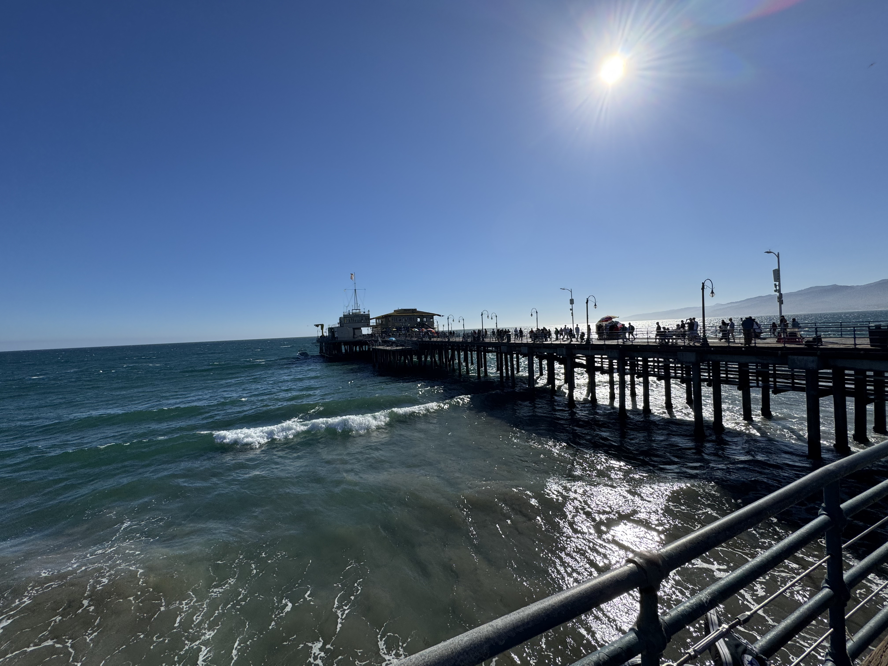
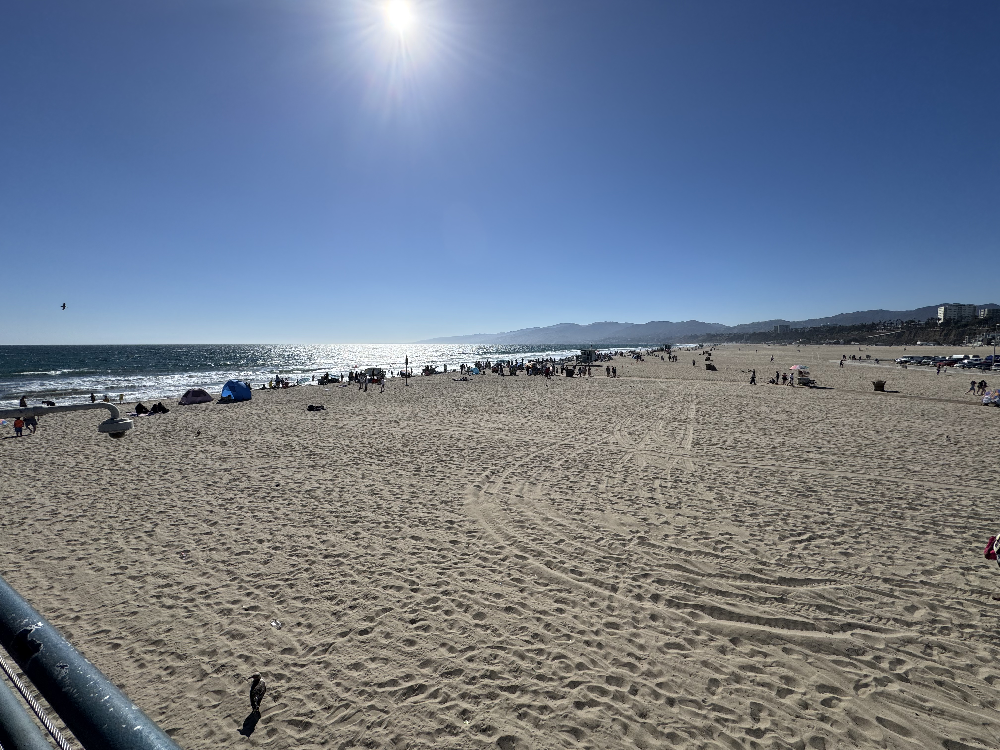

About My Trip to LA
LA by itself wasn't the most interesting for my as I had already been there a couple of times but being able to hang out with a big group of friends enchanced the experience by a lot. The main reason why we went to LA was to go to a convention called Anime EXPO and we had a great time walking around at the convention.
One of the things that we did apart from the convention was going to the Santa Monica Pier and being able to walk around there. It was a while since I last saw the pier, but it was really enjoyable being able to see the beautiful view of the ocean and beach. Below are some pictures that I took while on the pier.


One of My Favorite Parts
One of my favorite part of the vacation was also being able to watch the world cup games, as those were going on alongside our trip. We didn't hevaily prioritize the games as that wasn't the reason why we were on the trip to begin with, but it was still fun being able to watch the games with my friends and being hyped up when one of our favorite teams scored a goal.
What Made It Memorable
Usually I don't get to spend time with my friends outside of Chicago so this was a great feeling being able to finally hang out with the people I usually speak to online. If it wasn't for my friends, I probably would not have gone on the trip.
Would I Go Back?
Possibly, but I would also like to explore other options with my friends such as a trip outside of the states, perhaps Japan or some place in Europe. I don't particularily like going on a trip to the same place twice in a row, so I probably wouldn't go back soon unless it was for a spcific reason.